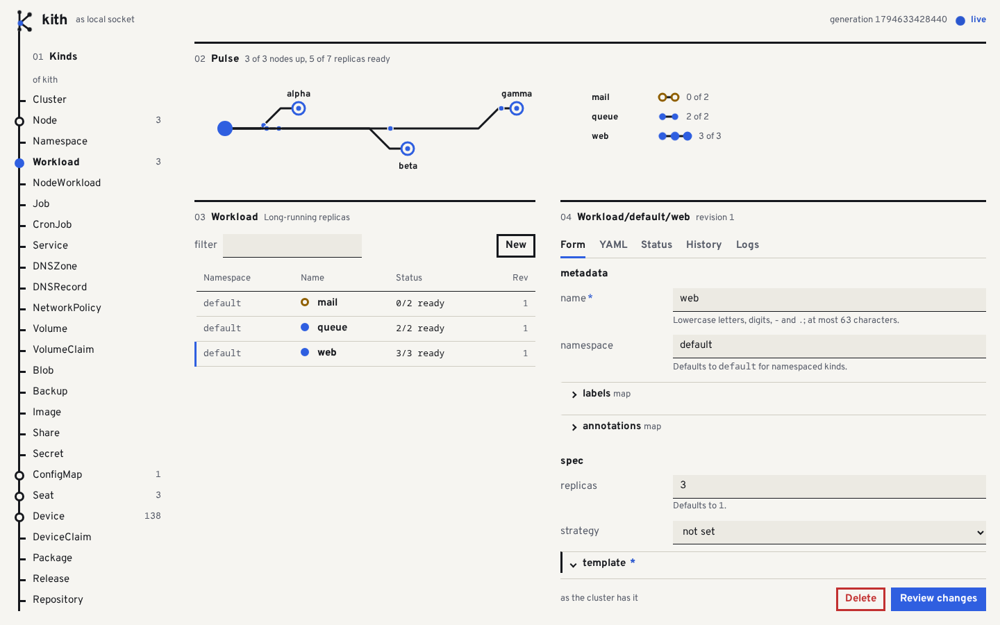

kith (n.) one's close circle; the people you trust.
All of your machines, one cluster.
kith is a tiny, immutable operating system and one small daemon. It joins your machines into a cluster and keeps them matching the YAML you apply: containers, virtual machines, storage, DNS, and the network between them.
Run it on one machine Read the README
Version 1.0.0. No release is tagged yet: it is built from source.
kithd: the store, the scheduler and the runtime in one static binary
of memory held by kithd with nothing to do
a whole kith OS update: kernel, root and its hash tree
built-in kinds of resource, all in one strict schema
01 Apply
Say what should run. Apply it.
Every resource is the same shape of YAML. kith lint checks files with no daemon, kith diff says what would change, and kith apply is all or nothing. Each change is a revision, and kith rollback goes back to one.
apiVersion: kith.dev/v1 kind: Workload metadata: name: hello spec: template: containers: - name: main image: mirror.gcr.io/library/busybox:1.36 command: - sh - -c - while true; do echo hello; sleep 5; done resources: memory: 32Mi cpu: 100m
$ kith apply -f hello.yaml Workload/default/hello created (revision 1) $ kith get KIND NAMESPACE NAME REVISION STATUS Workload default hello 1 1/1 ready $ kith lint -f web.yaml web.yaml:7:13: invalid type: string "yes", expected u32 | replicas: yes | ^
02 Cluster
Three machines, and one can go.
One command on the first machine, a token, one command on each of the others. There is no separate control plane to install: every node is the same kithd.
- webon alpha, beta and gamma
- leadergamma
- Every node keeps the whole store. A change is on the disks of more than half of the voting nodes before it is answered.
- Lose the leader and the other two pick a new one within a few seconds.
- The nodes find each other over a WireGuard mesh that
kithdsets up itself: directly where they can, through an edge node where they cannot. - Tested by breaking it. The chaos test cuts off and resets every node in turn, then all three at once. Every write that was acknowledged is on all three afterwards.
- Shown faster than life: a silent node reads
unreachableafter ten seconds, and its replicas still count as ready until it has been gone for--lost-after(five minutes unless you say otherwise); then they start elsewhere.
03 kith OS
An operating system with nothing to log into.
kithd is the machine's first process. The root is 6.3 MB, read-only, and checked block by block as it is read. There is no shell, no libc and no package manager. A node runs from one slot and updates into the other, so the system that runs is never the one being changed.
- Written and checked. Each piece of a signed update is held to the SHA-256 in its header as it lands in the other slot.
- Three tries. The node restarts into the new slot, and the boot loader counts each start.
- Good after ten seconds. A slot whose
kithdis still running then is kept. - Otherwise, back. When the tries are gone the slot that worked starts again, and says so.
Updates are signed, and a node takes none older than the newest it has run well. A release can hand its keys over to new ones. An UpdatePlan rolls a release through the cluster, one node at a time unless you say more.
04 Numbers
Small, and held to it.
Four budgets are measured by ci/budgets.py, and a build that goes over one fails. Every figure on this page is measured the same way and written here by a script: none is typed in.
Beside k3s
What it does not say: anything about throughput, many nodes or many workloads. And the two are not the same thing: k3s is Kubernetes, with its API and all that is written for it, and kith is not. How it was measured, and every run.
Where the code is
tests in the tree
more that boot whole machines in QEMU
lines of Rust, with unsafe forbidden outside one small crate
crates in one workspace
05 Kinds
33 kinds, one way to say them.
What runs, where its data lives, who may change it, and the machines themselves are all resources. You can define kinds of your own, with controllers and admission in WebAssembly. They are written in YAML, or in kith's own small language: a .kith file has names, functions and imports, gives the same resources, and is checked against the same schemas. Every node serves a web page with a form for each of them, drawn from its schema.
Run
Containers, plain processes and virtual machinesWorkloadNodeWorkloadJobCronJob
Reach
Names, load balancing, ingress with ACME, a DNS serverServiceDNSZoneDNSRecordNetworkPolicy
Keep
Replicated and encrypted volumes, backups to S3, sharesVolumeVolumeClaimBlobBackupImageShare
Configure
Delivered as files or environmentSecretConfigMap
Hardware
GPUs, displays and input, claimed by a workloadSeatDeviceDeviceClaim
Package
Signed packages in OCI registries, and GitOpsPackageReleaseRepositorySource
The machines
Nodes, their OS releases and rolloutsClusterNodeNamespaceOSReleaseUpdatePlanNodeKey
Access
Who may do what, by kind, verb and namespaceIdentityRoleRoleBinding
Your own
New kinds with a schema, served like the built-in onesKindDefinition

Three nodes on one machine, photographed by ci/ui_shots.py. A form for every kind, drawn from its schema; an apply shows its diff first.
06 Security
Kept small, and said plainly.
A container is kept from most of the machine
It runs as a user that is not root, with no capabilities (on kith OS, only the one to take a port below 1024) and no new privileges, on a read-only image, behind a filter that refuses 40 system calls. A template has to say so to take any of that off.
Only signed things are taken
Packages and OS releases are refused without a signature by a key the cluster trusts. (An update stick is not signed: whoever is at the machine with one is its admin.) An image is held to a signature when its template names keys.
What is not defended is written down
Who is trusted with what, every gap that is known, and what was never reviewed: it is all in one file, and it does not flatter. Read SECURITY.md
What a container may not ask the kernel for, as the filter names them:
07 Start
One machine is enough to begin.
kithd runs as you, with no root, on a Linux you already have. kith OS and more machines can come later.
$ cargo build --release $ export PATH=$PWD/target/release:$PATH $ kithd & $ kith apply -f examples/hello.yaml $ kith get -w workload $ kith logs workload/hello -f
$ kithd --listen 192.168.1.10:7443 --name alpha $ kith node token # on the other machine $ kithd --join 192.168.1.10:7443 --token TOKEN --name beta $ kith get node